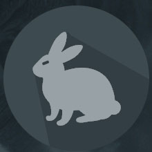
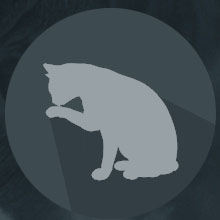
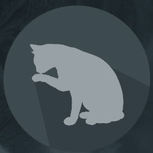

Изображения в таблице
Найдите в папке media три изображения, одинаковые по содержанию, но разные по имени и расширению.
Поместите изображения в папку example_1.
Создайте таблицу, соответствующую структуре: table>tbody>tr>td*3
Добавьте выбранные изображения в ячейки таблицы.
Добавьте к изображениям альтернативное описание.

|

|

|
Изображения указанного размера
Найдите в папке media изображение с самым большим разрешением.
Поместите изображение в папку example_2.
Добавьте изображение на страницу трижды, изменяя параметры размера:
- ширина - 500px
- ширина - 500px, высота - 200px
- высота - 300px

Изображения с одинаковыми/разными именами
Не меняя файловой структуры папки media, добавьте на страницу файлы с именами: FILE.JPG, file.jpeg, FiLe.jpe
Убедитесь, что с точки зрения браузера это разные имена и разные файлы.
Добавьте к изображениям всплывающую подсказку с именем файла.
 

Варианты изображения
Найдите в папке media изображение с расширением tiff.
С помощью элемента picture организуйте его добавление на страницу, а также альтернативную загрузку файла
такого же внешне, но с другим расширением.